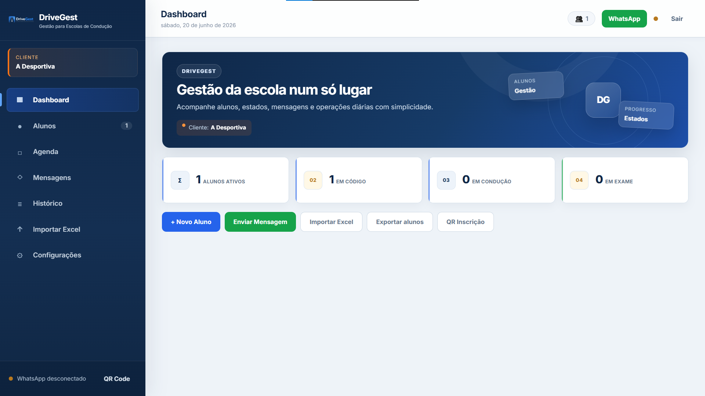
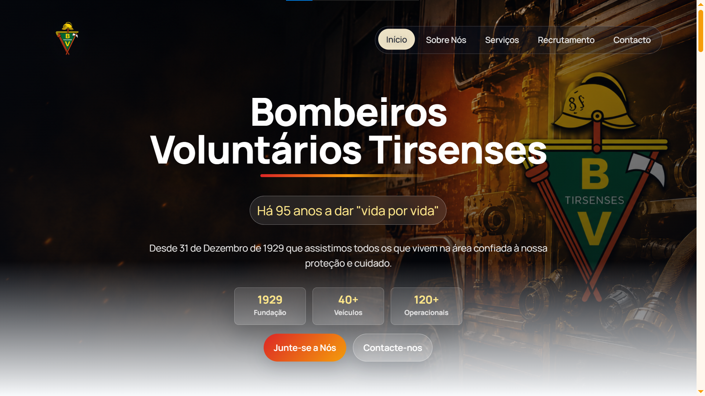
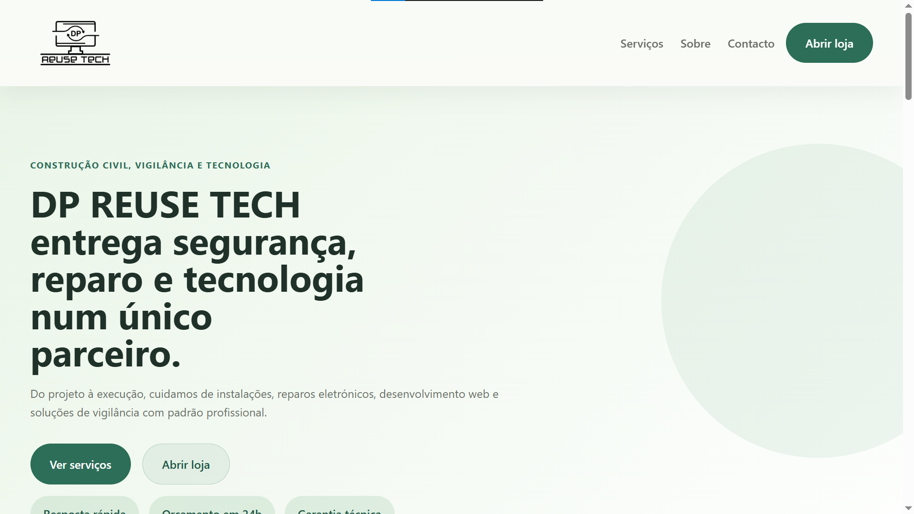

01
DriveGest
Sistema de gestão para escolas de condução com dashboard, alunos, estados, WhatsApp e importação/exportação de dados.
Node.js · SQLite · JavaScript
Programador Web & Mobile · Bombeiro Voluntário
Sou o Leonardo Martins, programador em Portugal. Desenvolvo projetos web e mobile, desde websites institucionais até sistemas de gestão com dashboard, base de dados e integrações.

Sobre mim
Tenho experiência em desenvolvimento web e mobile, com projetos práticos como websites institucionais, sistemas de gestão, dashboards e aplicações com APIs. Também sou Bombeiro Voluntário, algo que me trouxe responsabilidade, disciplina e atenção ao detalhe.
Skills
Projetos

Sistema de gestão para escolas de condução com dashboard, alunos, estados, WhatsApp e importação/exportação de dados.

Website institucional moderno para os Bombeiros Voluntários Tirsenses, com foco em comunicação, recrutamento e presença digital.

Website empresarial para apresentação de serviços de construção, segurança, reparação e tecnologia.
Contacto
Estou disponível para desenvolver websites, melhorar projetos existentes ou criar soluções digitais à medida.
Ver GitHub